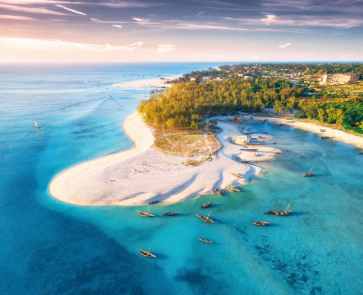

Zanzibar 🌶️

🏝️ Zanzibar: L'Isola delle Spezie e della Storia Swahili Conosciuta come l'Isola delle Spezie, Zanzibar è una gemma al largo della costa della Tanzania ricca di storia, in particolare a Stone Town, un sito Patrimonio Mondiale dell'UNESCO dove si fondono influenze africane, arabe, indiane ed europee. Oltre alle sue spiagge paradisiache e al mare ideale per il kitesurf, l'isola invita all'esplorazione delle famose piantagioni di spezie e offre un assaggio autentico della cultura Swahili, perfetta per chi cerca storia, avventura e relax balneare in un'unica vacanza.
- 🎾 Attività: Spice Tour, esplorazione di Stone Town, immersioni, safari blu
- 🍳 Cibo tipico: Ubri (curry di riso al cocco), Pilaus, frutti di mare e spezie fresche
- ⭐ Luoghi iconici: Stone Town, Prison Island, spiagge di Nungwi